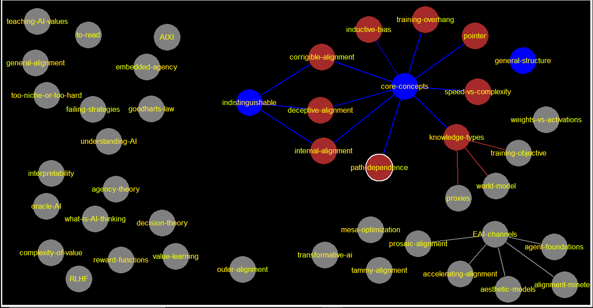

tammy-alignment
speed-vs-complexity
transformative-ai
general-structure
2 worlds: high and low path dependence, and the article explores "how the inductive biases could play out" [in low path dependence] And we're going to imagine that, actually, the inductive biases in machine learning are not very path dependent so each world has a different set of inductive biases? no. the inductive biases are either path dependent or not. and whether they are or not, defines which world you are in.
weights-vs-activations
knowledge-types
[[proxies-->proxies]] [[world-model-->world-model]] [[training-objective-->training-objective]]
training-objective
indistinguishable
[[corrigible-alignment-->corrigible-alignment]] [[proxy-alignment-->internal-alignment]] [[deceptive-alignment-->deceptive-alignment]]
core-concepts
[[low-path-dependence-->low-path-dependence]] [[high-path-dependence-->high-path-dependence]] [[pointer-->pointer]] [[overhang-->training-overhang]] [[tradeoff-->tradeoff]] [[inner-alignment-->inner-alignment]] [[corrigible-alignment-->corrigible-alignment]] [[knowledge-types-->knowledge-types]] [[proxy-alignment-->internal-alignment]] [[deceptive-alignment-->deceptive-alignment]] [[inductive-bias-->inductive-bias]] [[path-dependence-->path-dependence]] [[speed-vs-complexity-->speed-vs-complexity]]
training-overhang
pointer
world-model
proxies
deceptive-alignment
blaise pascal he doesnt really care about the bible, but he just wants to avoid hell. so hell do what it says and appear christian. [[inner-alignment-->inner-alignment] [[outer-alignment-->outer-alignment] [[mesa-optimization-->mesa-optimization] https://www.lesswrong.com/posts/A9NxPTwbw6r6Awuwt/how-likely-is-deceptive-alignment slides: https://docs.google.com/presentation/d/1IzmmUSvhjeGhc_nc8Wd7-hB9_rSeES8JvEvKzQ8uHBI/edit
path-dependence
internal-alignment
jesus christ he is literally god. knows exactly what god and the bible wants.
corrigible-alignment
martin luther doesnt care about the church or what people say, only the bible. "call the Martin Luthers corrigibly aligned, because they want to figure out what you want, and then do that" ok why are they unique in figuring out what you want? oh because jesus is a copy of god, he wants the same things, he doesnt have to figure them out so he wants to figure out the training objective, not necessarily what you want. hmm.
inductive-bias
inductive bias is about.. how will the model learn??? assumptions about how to generalize, and what to make of things it sees. "A classical example of an inductive bias is Occam's razor," "The inductive bias (also known as learning bias) of a learning algorithm is the set of assumptions that the learner uses to predict outputs of given inputs that it has not encountered.[1]" some common inductive biases - Maximum margin: when drawing a boundary between two classes, attempt to maximize the width of the boundary. This is the bias used in support vector machines. The assumption is that distinct classes tend to be separated by wide boundaries. - Minimum features: unless there is good evidence that a feature is useful, it should be deleted. This is the assumption behind feature selection algorithms. etc So in the high path dependence world, the correct way to think about the inductive biases in machine learning, is to think: well, we have to understand particular paths that your model might take through model space—maybe first you might get one thing So this is one way to think about inductive biases, where it really matters the particular path you take through model space, and how difficult that path is You give it a bunch of data, and it's always going to find the simplest way to fit that data. In that situation, what matters is the data that you gave it and some basic understanding of simplicity, a set of inductive biases that your training process came with. One way to think about this is: your model space is so high-dimensional that your training process can essentially access the whole manifold of minimal loss solutions, and then it just picks the one that's the simplest according to some set of inductive biases. ^^ so, "some understanding of simplicity" is what your inductive bias says "simplicity" means? And we're going to imagine that, actually, the inductive biases in machine learning are not very path dependent "for low path dependence worlds, inductive biases are some comination of simplicity and speed" "approximate the simplicity priors by looking at the simplest one in each class"
what-is-AI-thinking
mesa-optimization
" a mesa-objective, which is just something that it’s trying to optimize for"
outer-alignment
value-learning
alignment-minetest
in pins: https://docs.google.com/document/d/1Oz8neKkXYaWzmRg9ZeYqlFIgYENUkHLhcviDG2hQRiE/edit?usp=sharing "The goal of this project is to provide a rich and easily moddable environment that alignment researchers can use to test many aspects of alignment and alignment techniques."
aesthetic-models
accelerating-alignment
In terms of concrete tools, we're thinking about things like: (HITL = human in the loop) - HITL interface to explore LM generations about alignment work - HITL interface to help alignment researchers write more quickly (e.g. expand bullet points, rewrite text, etc.) - Tools to automatically generate alignment forum content like posts/comments from particular users and on particular topics (possibly integrated with LW/AF via the website, and extension, or a mirror) - A mirror LW/AF website filled with autogenerated content (like https://reddit.com/r/SubSimulatorGPT2/)
agent-foundations
in channel description: Decision Theory, Embedded Agency, Corrigibility, etc. Introduction (Warning: Math): https://www.alignmentforum.org/s/Rm6oQRJJmhGCcLvxh
prosaic-alignment
EAI-channels
[[prosaic-alignment-->prosaic-alignment]] [[agent-foundations-->agent-foundations]] [[accelerating-alignment-->accelerating-alignment]] [[aesthetic-models-->aesthetic-models]] [[alignment-minetest-->alignment-minetest]]
oracle-AI
general-alignment
to-read
decision-theory
too-niche-or-too-hard
failing-strategies
AIXI
teaching-AI-values
complexity-of-value
embedded-agency
agency-theory
RLHF
interpretability
understanding-AI
goodharts-law
reward-functions